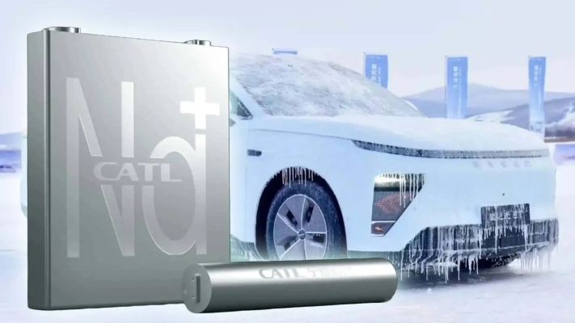
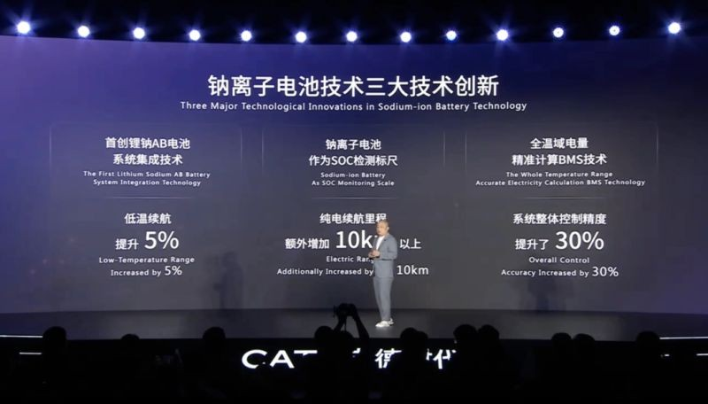
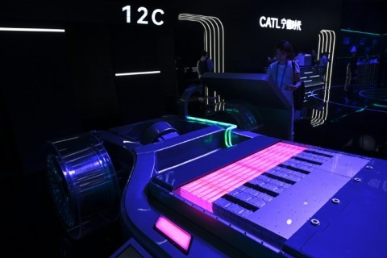
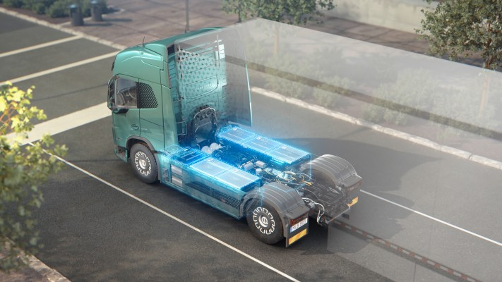
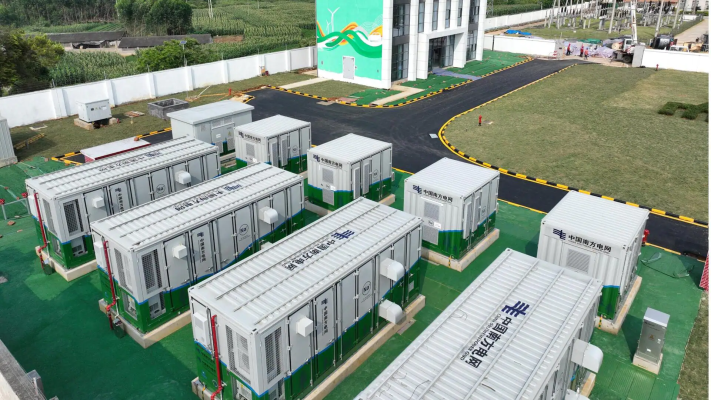
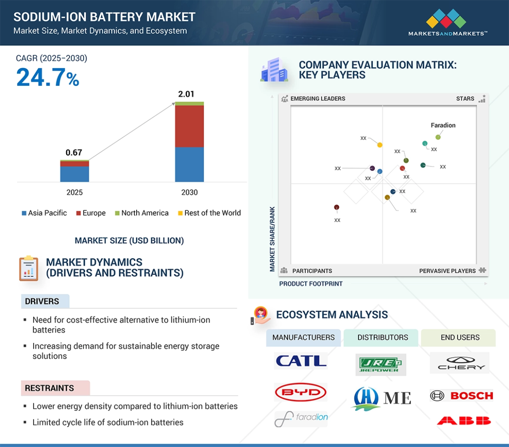

On April 21st, 2025, Contemporary Amperex Technology Co. Limited (CATL), a global powerhouse in battery technology, unveiled a trio of groundbreaking products: the CATL Xiaoyao dual-core, the CATL sodium new battery, and the CATL second-generation super-charged battery. This launch signifies CATL's commitment to pushing the boundaries of power battery technology, aiming to create a comprehensive "hexagonal warrior" product lineup catering to diverse demands.
Among these innovations, the spotlight shines brightly on CATL's new sodium-ion battery, marking its official transition from the laboratory to mass production. This milestone positions it as the world's first mass-produced sodium-ion battery for passenger vehicles, boasting core performance parameters that challenge existing norms and hold significant promise for the future of energy storage, including potential ramifications for the burgeoning electric vehicle (EV) market in India.
A Technological Leap: Sodium-Ion Batteries Enter the Fray
CATL's new sodium-ion battery showcases remarkable advancements across several key performance indicators:
- Energy Density Breakthrough: Achieving an energy density of 175Wh/kg for passenger vehicle applications, this new battery represents a 9.38% improvement over CATL's first-generation sodium-ion product from 2021. Impressively, this figure now closely approaches the mainstream energy density of lithium iron phosphate (LFP) batteries, which typically range from 180-200Wh/kg.
- Furthermore, through optimized material coordination in the Prussian white positive electrode and hard carbon negative electrode, the volumetric energy density has been elevated to 350Wh/L, allowing for more compact and efficient battery system integration.
- Extreme Environmental Adaptability: A significant hurdle for traditional lithium-ion batteries, particularly in colder climates, is performance degradation. CATL's new sodium-ion battery decisively tackles this issue. At an extreme low temperature of -40°C, it retains 90% of its available power. Even when the state of charge (SOC) drops to a mere 10%, vehicle power remains largely unaffected.
- This full-temperature range working ability, spanning from -40°C to 70°C, presents a unique advantage in regions experiencing severe cold, such as Northern Europe and parts of Asia.

- Fast Charging and Enhanced Lifespan: The new sodium-ion battery supports a 5C peak charging rate, enabling a rapid replenishment of 80% charge in just 15 minutes. Its cycle life exceeds an impressive 10,000 cycles, surpassing lead-acid batteries by more than tenfold and leading to a substantial 61% reduction in full lifecycle costs. For commercial vehicles, the new sodium 24V heavy-duty truck starter-station integrated battery achieves an 8-year service life, potentially revolutionizing the longevity expectations for battery systems in this sector.
- Intrinsically Safe Design: Safety remains a paramount concern in battery technology. CATL's sodium-ion battery addresses this at the fundamental material level by eliminating combustion-supporting factors that contribute to thermal runaway. Incorporating a dual-core thermal runaway safety protection technology, the battery pack is engineered to avoid fire or explosion even under extreme conditions like puncture and extrusion, meeting stringent aviation-grade safety standards.

Building a Sodium-Ion Ecosystem: CATL's Industrial Chain Layout
CATL is strategically establishing a comprehensive industrial ecosystem for sodium-ion batteries, spanning the entire value chain:
Material System Innovation:
- Positive Electrode: Utilizing Prussian white material, CATL has reportedly overcome the challenge of cycle capacity attenuation through electron cloud rearrangement technology, achieving a gram capacity of 160mAh/g.
- Negative Electrode: The development of porous hard carbon materials with a high sodium storage capacity of 350mAh/g and an initial Coulombic efficiency of 92% promises a 30% cost reduction compared to traditional graphite.
- Electrolyte: An optimized sodium salt formula, employing a mixed system of sodium hexafluorophosphate (NaPF6) and carbonate solvents, achieves an enhanced ionic conductivity of 12mS/cm, catering to high-rate charging and discharging demands.

Manufacturing Breakthrough:
- Process Innovation: CATL has developed specialized rolling and coating processes tailored for sodium-ion batteries, enabling high-precision electrode material processing and achieving a yield rate exceeding 95%.
- Capacity Planning: Ambitious production capacity targets are set at 50GWh by 2025, primarily located in key production bases to meet the anticipated market demand from energy storage and low-speed electric vehicles.
Application Scenario Expansion:
- Passenger Cars: Collaborations with automakers are underway to launch sodium-electric vehicles with a targeted range of 500 kilometers, initially focusing on the northern market.
- Commercial Vehicles: The new 24V heavy-duty truck batteries are being supplied to major players, aiming to replace traditional lead-acid batteries.

- Energy Storage: Partnerships with grid operators are in place to construct a 100MWh sodium-ion battery energy storage power station for grid stabilization and renewable energy integration.

Market Prospects: A Trillion-Dollar Opportunity
The market outlook for sodium-ion batteries is exceptionally promising:
- Market Size Forecast: Global sodium-ion battery market size is projected to exceed 40GWh in 2025 and reach US$25.388 billion by 2030, exhibiting a robust compound annual growth rate of 7.28%. China is expected to be the dominant market, capturing over 60% of the global share, driven by supportive policies and a strong industrial chain.
- Competition Landscape Analysis: CATL, with its technological lead and production scale, currently holds a significant global market share. However, other companies are rapidly advancing, creating competition in specific segments like energy storage and low-speed vehicles. International battery giants are also increasing their research and development efforts, with product launches anticipated by 2026.
- Cost Advantage: A significant driver for sodium-ion battery adoption is their lower material cost, estimated to be 30%-40% less than that of lithium-ion batteries, particularly when lithium carbonate prices remain elevated. With scaled-up production, the cost of sodium-ion battery systems is projected to reach parity with LFP batteries by 2025.

CATL's strategic advancements in sodium-ion technology, alongside its existing lithium-ion (both ternary and LFP) battery offerings, solidify its position as a key player in the new energy landscape, potentially unlocking a trillion-dollar market and driving global electrification efforts.
Implications for India's EV Market
The developments in sodium-ion battery technology, spearheaded by CATL, hold intriguing implications for India's rapidly growing EV market. India has set ambitious targets for EV adoption and is actively promoting local manufacturing through policies and incentives. However, the Indian EV ecosystem faces several challenges, including the high upfront cost of EVs, range anxiety due to limited charging infrastructure, and dependence on imports for critical battery components, particularly lithium.
The introduction of mass-produced, high-performance sodium-ion batteries could potentially address some of these challenges in the Indian context:
- Cost Reduction: The projected lower material costs of sodium-ion batteries compared to lithium-ion could translate to more affordable EVs in the future, making them accessible to a wider range of consumers in the price-sensitive Indian market. This aligns with the Indian government's focus on reducing the upfront cost of EVs to drive adoption.
- Reduced Reliance on Lithium: India has limited domestic lithium reserves and is heavily reliant on imports. Sodium, being far more abundant and readily available, could reduce this dependence and enhance the energy security of India's EV ambitions. This is particularly relevant given the recent discovery of lithium deposits in India, as diversifying battery chemistries can create a more resilient supply chain.
- Enhanced Low-Temperature Performance: The superior low-temperature performance of sodium-ion batteries could be particularly beneficial in the northern regions of India, where cold weather can significantly impact the range and performance of lithium-ion EVs.
- Safety Considerations: While both battery chemistries have their own safety profiles, the intrinsically safer design reported by CATL for its sodium-ion battery could be a significant advantage in addressing consumer concerns about EV safety in the Indian market.
- Energy Storage Synergies: Beyond EVs, sodium-ion batteries' suitability for energy storage applications aligns with India's growing focus on renewable energy integration and grid stabilization. Establishing a domestic sodium-ion battery manufacturing base could support both the EV and energy storage sectors.
However, it's important to note that sodium-ion battery technology is still in its early stages of mass production, and certain challenges remain in comparison to more mature lithium-ion technologies. These include potentially lower energy density (though CATL's latest generation is closing the gap with LFP) and the need to establish a robust domestic manufacturing ecosystem and supply chain in India.
The Indian government's push for local EV manufacturing and the increasing investments in battery production are positive indicators. As global players like CATL bring advanced battery technologies like sodium-ion to the forefront, it presents an opportunity for India to strategically integrate these innovations into its EV roadmap, potentially accelerating adoption, ensuring greater energy security, and fostering a more sustainable transportation future. The coming years will be crucial in observing how sodium-ion battery technology matures and its role in shaping the landscape of electric mobility, both globally and within India.